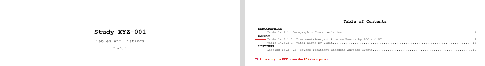
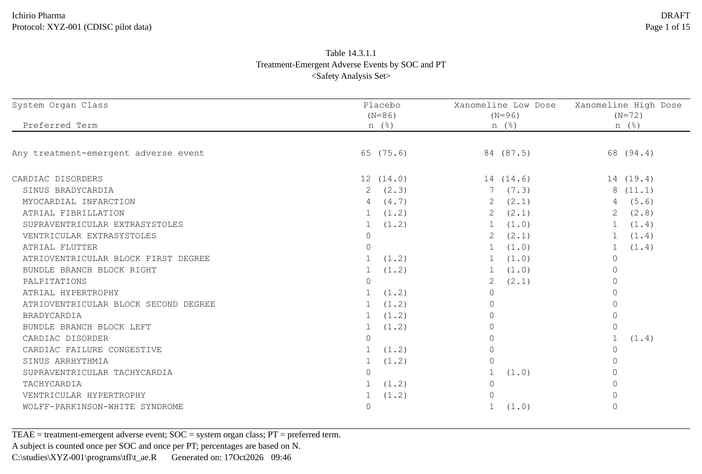

A clinical deliverable is many tables, listings and figures, each
written to its own .rtf by its own program.
assemble_rtf() joins them into one
document: a cover page, a table of contents whose entries are
links, each output starting on its own page with its own running header
and footer, and a bookmark per output, which Word and LibreOffice turn
into the PDF’s bookmarks.
The Gallery’s demographics, adverse events, vital signs and listing, assembled with a cover page and a table of contents, then converted to PDF with LibreOffice:

Each entry of the table of contents is a link. Click the adverse events entry and the reader opens that table’s first page:

Show code
files <- c("t_dm.rtf", "t_ae.rtf", "t_vs.rtf", "l_sae.rtf") # the Gallery's outputs
assemble_rtf(
files, "XYZ-001_tables.rtf", overwrite = TRUE,
cover = list(title = "Study XYZ-001", subtitle = "Tables and Listings",
version = "Draft 1"),
toc = data.frame(
file = files,
heading = c("DEMOGRAPHICS", "SAFETY", "SAFETY", "LISTINGS"),
label = c("Table 14.1.1 Demographic Characteristics",
"Table 14.3.1.1 Treatment-Emergent Adverse Events by SOC and PT",
"Table 14.3.5.1 Vital Signs by Visit",
"Listing 16.2.7.2 Severe Treatment-Emergent Adverse Events")),
toc_page_numbering = "roman")
system2("soffice", c("--headless", "--convert-to", "pdf", "XYZ-001_tables.rtf"))The outputs first
Each output is written as it always is – its own program, its own
generate_rtfreport(). Here, two small ones:
Show code
make <- function(title, path) {
d <- data.frame(A = c("1", "2"), B = c("x", "y"), stringsAsFactors = FALSE)
doc <- rtf_document() |> rtf_tables(as_rtftables(d), titles = list(c(title)))
generate_rtfreport(doc, path, overwrite = TRUE); path
}
f1 <- make("Table 14.1.1 Demographics", tempfile(fileext = ".rtf"))
f2 <- make("Table 14.2.1 Adverse Events", tempfile(fileext = ".rtf"))A table of contents from the titles: toc = "auto"
toc = "auto" builds one TOC entry per file, taking each
label from the file’s first title:
pkg <- tempfile(fileext = ".rtf")
assemble_rtf(c(f1, f2), pkg, toc = "auto", overwrite = TRUE)
file.exists(pkg)
#> [1] TRUEA cover page and a table of contents of your own:
cover =, toc =
For sections and explicit labels, pass the table of contents as a
table: one row per file, its label, and a
heading printed above the entry whenever it changes
(level sets the indent). Each entry creates an RTF
bookmark, so the TOC is navigable in the word processor
and the entries jump to the right table:
Show code
pkg2 <- tempfile(fileext = ".rtf")
assemble_rtf(
c(f1, f2), pkg2,
cover = list(title = "Study XYZ-001", subtitle = "Final Tables", version = "v1.0"),
toc = data.frame(
file = c(f1, f2),
heading = c("EFFICACY ANALYSES", "SAFETY ANALYSES"),
label = c("Table 14.1.1 Demographics", "Table 14.2.1 Adverse Events")
),
toc_page_numbering = "roman",
overwrite = TRUE
)
file.exists(pkg2)#> [1] TRUEassemble_rtf() also takes a cover page and
toc_leader / toc_page_numbering options; see
?assemble_rtf.
Page numbers
Each output keeps its own running footer, so a table says Page 2
of 5 of itself, whichever page of the deliverable it is on: write
it with the static {PAGE} / {TOTAL_PAGES}
tokens, filled in when that output is written.
toc_page_numbering numbers the table of contents’ own pages
("roman", "decimal"), and the page each entry
points to is the page in the assembled document.
Assembling a folder: assemble_folder()
To combine every RTF in a directory,
assemble_folder(dir, output_file) reads each file’s table
number and title into a table of contents and assembles them. Without
output_file it returns that table instead: edit the order,
headings and labels (or save it with spec_file = and edit
it in Excel), then pass it – or its path – to
assemble_rtf(toc = ). See
?assemble_folder.
Bookmarks in the PDF, and Word and LibreOffice
The assembled file is RTF. Each table of contents entry is a link to a bookmark at the start of its file, and each file also starts with a heading at an outline level, printed invisibly (white, one point high). Word and LibreOffice show those headings as the PDF’s bookmarks when they export the file to PDF, so the PDF can be navigated table by table, as an eCTD submission expects. With LibreOffice from R:
system2("soffice", c("--headless", "--convert-to", "pdf", pkg2))
pdftools::pdf_toc(sub("[.]rtf$", ".pdf", pkg2)) # one bookmark a fileThe page numbers in the table of contents are fields that already hold the page rtfreporter computed for each file; Word and LibreOffice update them when they refresh fields. The links and the bookmarks above were checked in the PDF that LibreOffice writes. In Word itself a link follows on Ctrl+click, its default setting.
See ?assemble_rtf and ?assemble_folder for
every argument.
Where next
- Rendering and post-processing — writing one output, and editing the written file
- Headers, footers and tokens — the running header and footer each output keeps
- The pharmaverse catalog — tables of three packages, assembled